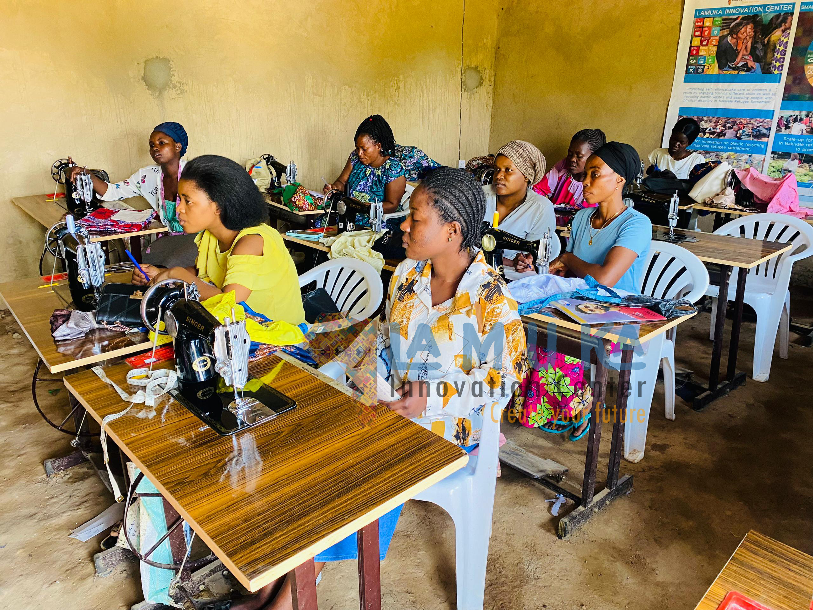
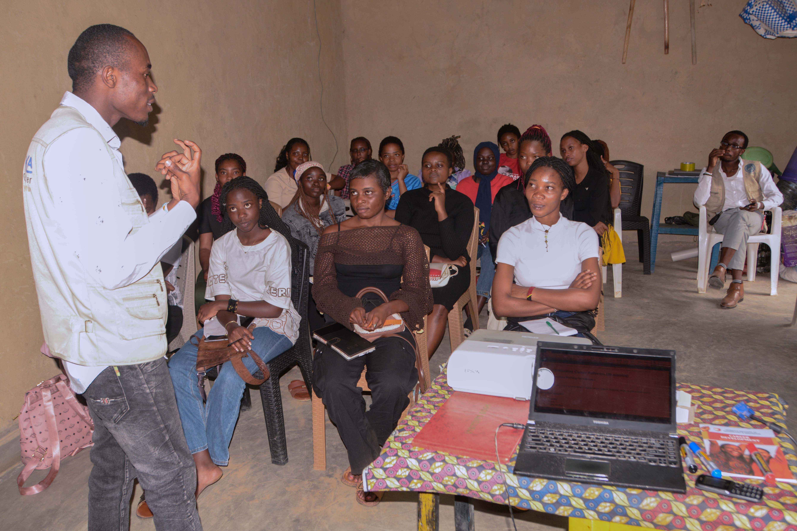
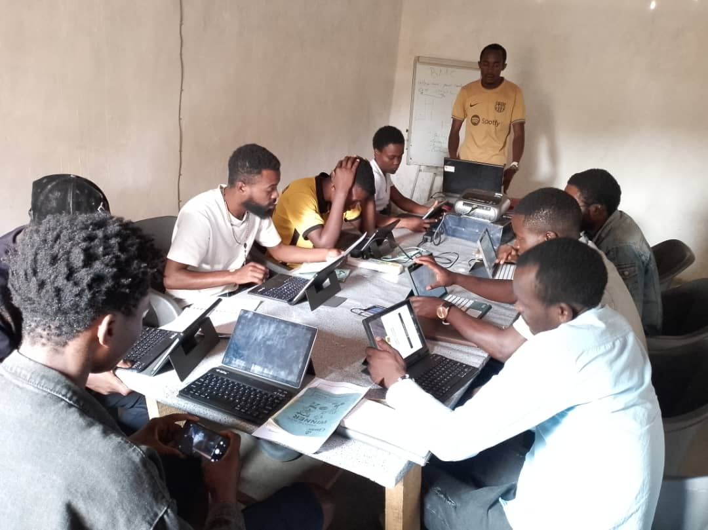
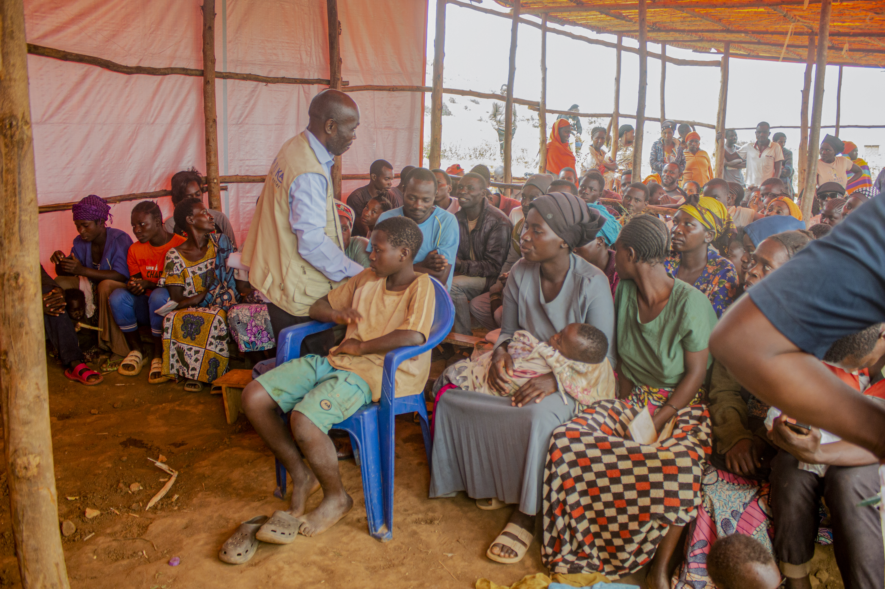
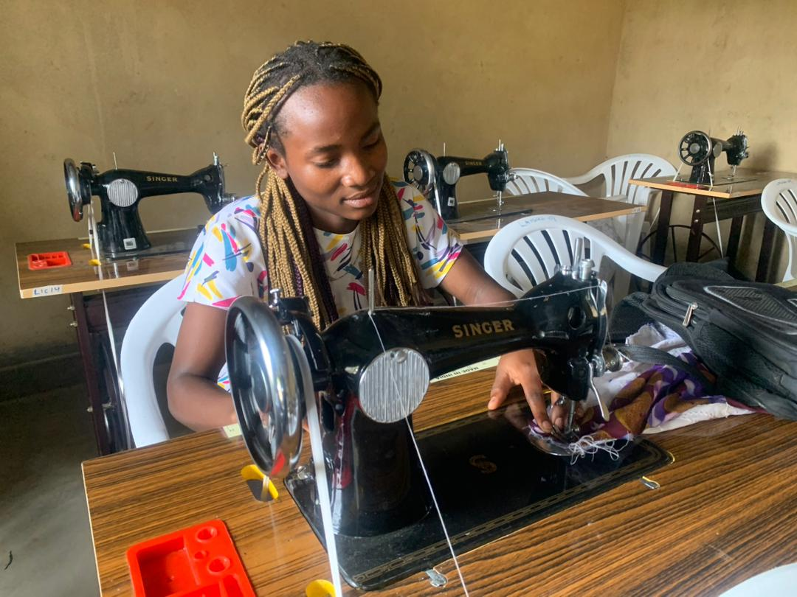
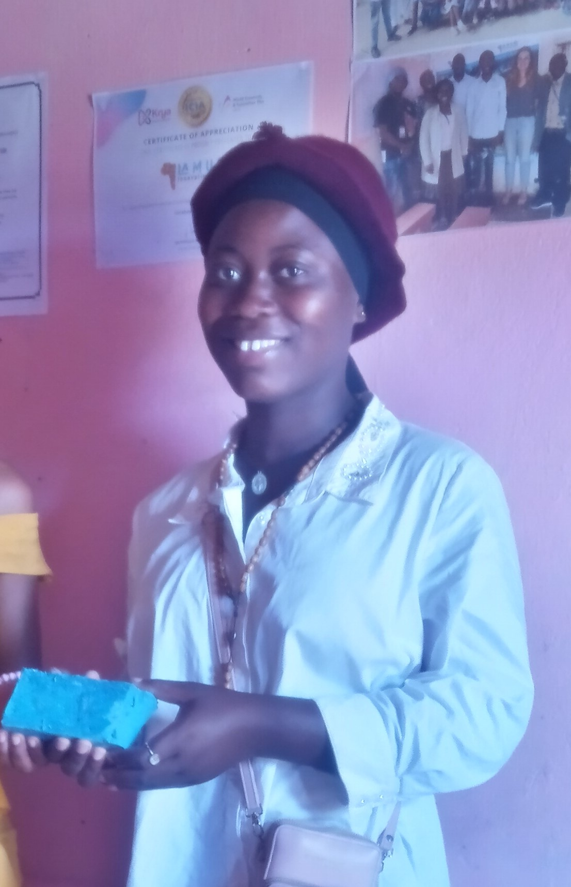
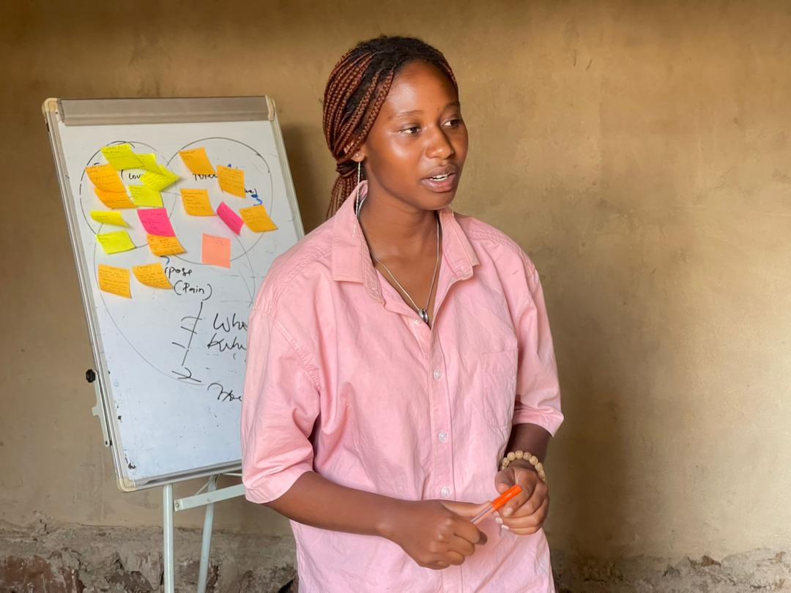
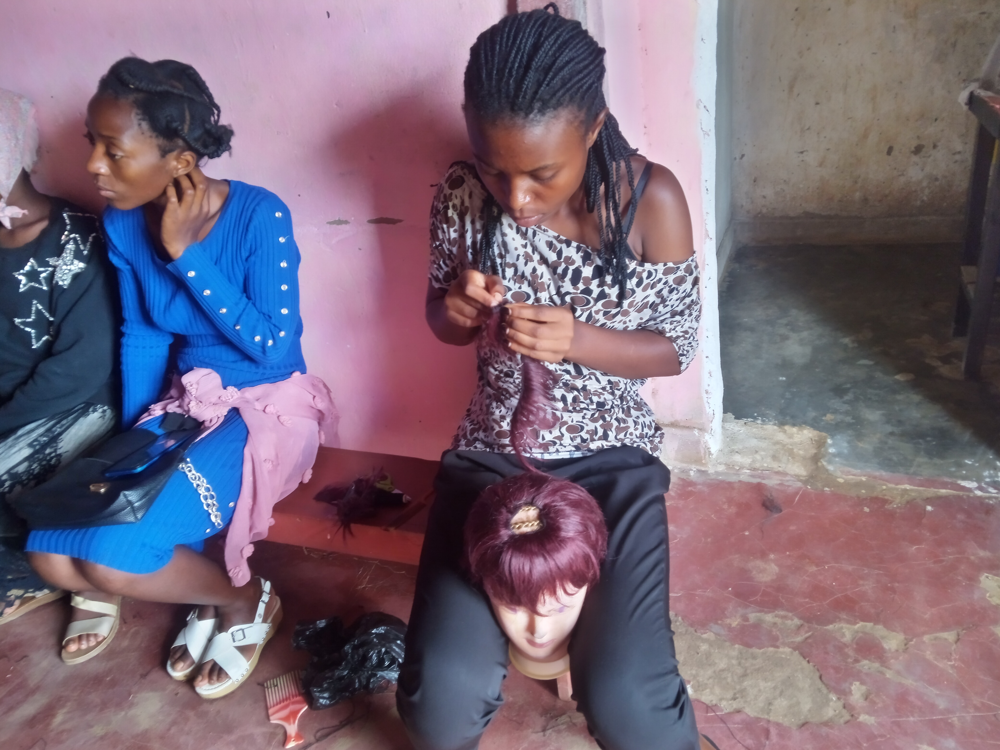

Our Mission
To empower refugees and young people with practical skills, entrepreneurship, digital literacy and financial education that promote self-reliance, economic independence and positive community transformation.
Lamuka Innovation Center is a refugee-led initiative based in Nakivale Refugee Settlement, Uganda. Established to create meaningful opportunities, we empower refugees and young people through practical vocational training, entrepreneurship, digital skills and community development.
We believe displacement should never define a person's future. Everyone deserves the opportunity to learn, innovate, build sustainable livelihoods and contribute meaningfully to society.
Through inclusive learning, innovation and community-led initiatives, we transform skills into opportunities and opportunities into lasting change.
Connect with Lamuka →
Our purpose guides every opportunity we create and every community we serve.
To empower refugees and young people with practical skills, entrepreneurship, digital literacy and financial education that promote self-reliance, economic independence and positive community transformation.
Communities where refugees and young people have equal access to skills, opportunities and support to build dignified, resilient and sustainable futures.
To equip refugees and young people with the skills, knowledge, resources and opportunities they need to become self-reliant, build sustainable livelihoods and contribute to thriving communities.
The principles that guide our work, relationships and commitment to communities.
We respect diversity and ensure everyone has the opportunity to participate and thrive.
We believe communities should be active participants and leaders in their own development.
We encourage new ideas and practical solutions to community challenges.
We act responsibly, transparently and with respect for the people we serve.
We promote hands-on learning that turns knowledge into real opportunities.
We build partnerships and work together to achieve sustainable impact.
Through practical training, enterprise development and community empowerment, we help refugees and young people build skills, strengthen livelihoods and shape their futures.

01Equipping participants with practical skills in tailoring, garment making, hairdressing, makeup, soap-making and other vocational disciplines to improve access to employment and self-employment.
Learn More →
02Supporting aspiring and existing entrepreneurs with business planning, enterprise development, innovation and practical knowledge to start and strengthen sustainable businesses.
Learn More →
03Building digital confidence through computer training, Microsoft Office applications, internet research, email communication and essential digital tools for education, employment and business.
Learn More → 04
04
Promoting responsible financial management through budgeting, saving, record keeping, financial planning, cash management and informed business decisions.
Learn More → 05
05
Creating opportunities for women and young people to strengthen their leadership, confidence, participation, work readiness and ability to contribute to community development.
Learn More →
06Encouraging practical livelihood initiatives, agricultural knowledge and income-generating opportunities that contribute to household resilience and sustainable community development.
Learn More →Every skill learned, every opportunity created and every person reached represents a step towards a more resilient and empowered community.
Meet the people whose journeys demonstrate how skills, knowledge and opportunity can transform lives.

Salama Shamamba
Through tailoring and garment-making training, Salama developed practical sewing skills and began receiving sewing orders within her community.
Before joining Lamuka Innovation Center, I was a young woman with limited opportunities and no professional skills to help me earn an income. I depended on family support and often worried about how I would become financially independent. I had always been interested in fashion and sewing, but I could not afford vocational training.
I joined Lamuka Innovation Center's Tailoring and Garment Making programme, where I received practical training in sewing, garment construction, fabric measurement, cutting, and clothing design.
Through the training, I learned how to operate a sewing machine, take body measurements, cut fabrics, make different garments, and repair clothes. I also gained basic business and customer-care knowledge.
After completing the training, I became more confident in my abilities and started making clothes for people in my community. I gradually began receiving small sewing orders, which helped me generate income and support some of my personal needs.
"Lamuka helped me discover that I have valuable skills. Today, I no longer see myself as someone without opportunities. I see myself as a woman who can create opportunities through her own hands."

Clarisse Zihindula
Through social entrepreneurship and soap-making training, Clarisse learned production and business skills and started making liquid soap for local customers.
I was a young mother struggling to meet my family's basic needs. Although I wanted to start a small business, I lacked the knowledge of how to identify a business opportunity, manage money, calculate costs, and attract customers. I had ideas but did not know how to turn them into a sustainable source of income.
I participated in Lamuka's Social Entrepreneurship and Soap-Making Training, which introduced me to practical production skills and the fundamentals of starting and managing a small enterprise.
I learned soap production, product quality management, business planning, financial literacy, record keeping, pricing, customer care, and basic marketing.
Following the training, I started producing liquid soap on a small scale for household use and local customers. I learned how to manage production costs and reinvest part of my earnings into the business.
The training changed how I viewed entrepreneurship. I realized that I did not need a large amount of capital to begin; I needed the right knowledge, determination, and a practical starting point.
"Before joining Lamuka, I thought starting a business was only for people with money. Now I understand that knowledge and skills can help you turn a small idea into an opportunity."
Nelson Mubangi
Nelson developed computer and digital literacy skills, gaining confidence in preparing documents, using email and accessing online opportunities.
Growing up in a community with limited access to computers and digital resources, I had very little experience using technology. I understood that digital skills were becoming important for education, employment, and business, but I did not have the opportunity to learn them.
I joined Lamuka Innovation Center's Digital Literacy Training, where I was introduced to computers, internet use, and essential digital tools.
During the training, I learned basic computer operations, Microsoft Word, Excel, PowerPoint, internet research, email communication, online safety, and digital collaboration.
After completing the programme, I became more confident using computers for personal learning and professional development. I can now prepare documents, create presentations, communicate through email, and search for educational and employment opportunities online.
I have also become someone my peers can approach when they need basic assistance with digital tools.
"Lamuka opened a door that I previously thought was closed to people like me. Technology is no longer something I fear; it is a tool I can use to build my future."

Janine Maombi
Janine strengthened her business management skills, improved financial record keeping and learned to separate personal and business finances.
I was operating a small informal business in my community, but I did not understand how to properly manage the money I earned. I frequently mixed personal and business finances, struggled to calculate profits, and sometimes used business capital to meet household expenses.
I participated in Lamuka's Business Management and Financial Literacy Training, which focused on helping participants develop practical business management and financial decision-making skills.
I learned business planning, budgeting, saving, record keeping, profit and loss calculation, cash-flow management, customer relations, and financial discipline.
After the training, I started keeping proper records of my business transactions and separating my business money from personal expenses. I became more aware of my business performance and began making informed decisions about savings, stock purchases, and reinvestment.
My business management improved, and I became more confident in planning for future growth.
"Lamuka did not just teach me how to make money. It taught me how to manage the money I make. That knowledge has changed the way I run my business."

Bahati Makala Jean d’Arc
Through hairdressing and beauty training, Bahati gained practical skills and began offering services to women and girls in her community.
I was a young woman who had completed some levels of education but had limited opportunities to continue studying or secure employment. I wanted to become financially independent but lacked practical skills that could help me earn an income within my community.
I enrolled in Lamuka Innovation Center's Hairdressing and Beauty Skills Training, where I received hands-on experience in hairstyling, braiding, hair treatment, and basic beauty services.
I developed practical hairdressing skills, learned hygiene and sanitation standards, customer service, time management, and basic entrepreneurship.
After the training, I started offering hairdressing services to women and girls in my community. I began earning income from my skills and built relationships with customers who appreciated my services.
The experience also improved my confidence, communication skills, and ability to identify opportunities within my community.
"Today, I have something valuable that nobody can take away from me: a skill. Lamuka gave me the opportunity to learn, practice, and believe in my ability to become self-reliant."
Empowering Young Women in Nakivale through practical work-readiness skills, confidence building and preparation for employment and future opportunities.
Watch on YouTube →
Lasting change happens when people and organisations work together. Join Lamuka Innovation Center in creating opportunities for refugees and young people.
Collaborate with us to deliver skills training, entrepreneurship and community development initiatives.
Explore Partnerships →Support our mission through resources, equipment, learning materials, funding or technical expertise.
Support Lamuka →Share your knowledge, professional experience and skills to inspire and empower our communities.
Become a Volunteer →Work alongside refugees, young people and local entrepreneurs to build sustainable opportunities.
Get Involved →